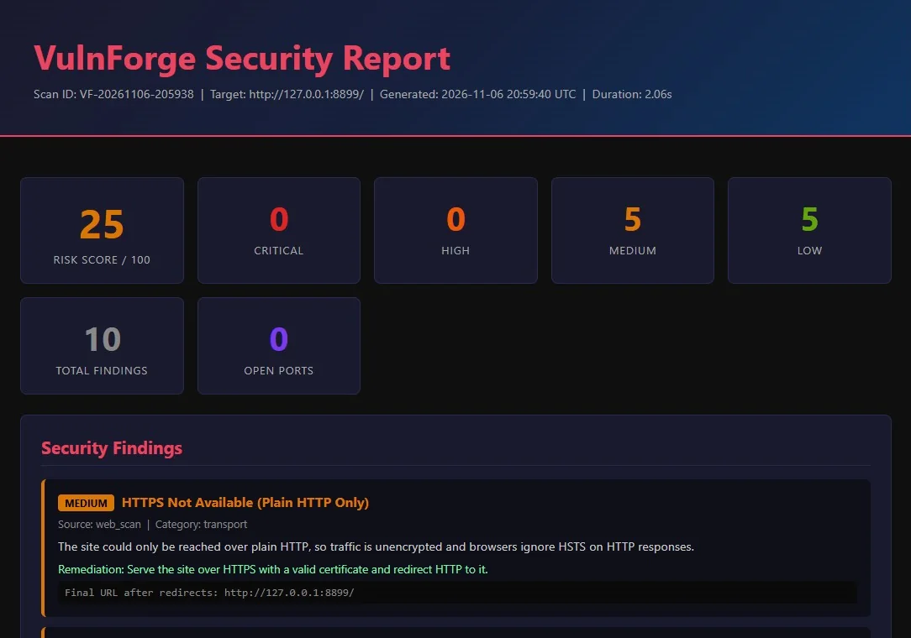

Async · plugin-extensible · Python
A scanner that checks you’re allowed to scan first.
VulnForge runs port, TLS, web and CVE checks in parallel, drops findings it isn’t confident about, and tells you how to verify each one by hand. Below is the whole flow, replayed from real scan output.
The demo uses two real scans of a throwaway web server on the author’s own machine. Nothing is simulated except where a note says so.
- 1Target
- 2Authorization gate
- 3Port · TLS · Web · DNS · plugins
- 4CVE match
- 5Confidence filter
- 6Score · report · history
02
Scan
Modules run concurrently, so a scan takes about as long as its slowest check. Pick one of the two real scans and replay it.
A replay of recorded output with the waiting time compressed. The numbers (checks, findings, durations, score) come from the real reports.
03
Findings
Every finding carries a severity and a confidence. Click one to see the evidence, the fix, and how to check it yourself instead of trusting the tool.
What do the confidence levels mean?
- low
- A hint, such as an unknown version or a version-only CVE list.
- medium
- Version match on distro-packaged software, where fixes are often backported.
- high
- A deterministic check: a header is absent, or content passed a validator.
- confirmed
- A tool actively reported the host as vulnerable.
CVE and nmap-script findings below cve_matcher.min_confidence (default medium) are dropped and counted as hidden, not shown as facts. In these two scans nothing was hidden.
04
Score
A weighted sum of severities: critical 10, high 7, medium 4, low 1. Up to 50 it is exactly the sum. Above that, extra risk keeps counting with diminishing returns.
Same math as core/risk.py. The CLI exits with status 1 when the worst score in a run is 40 or more (the red-outlined tick on the bar), which is why scores up to 50 were left unchanged.
05
Reports and history
Each scan is saved, so you can compare runs and see whether a target is getting better or worse.

Formats
- HTML
- JSON
- TXT
- Markdown
- SARIF
SARIF drops into GitHub code scanning. PDF needs the optional WeasyPrint dependency; every other format works without it.
Trend, from the two real scans
http://127.0.0.1:8899/ risk 25 → 100 worsening (2 scans) Scan ID Risk Findings VF-20261106-205938 25 10 VF-20261106-205952 100 69
The second scan scores higher because it looked at a different layer: the port scan read the server banner and matched CVEs. That is a different scan, not a regression, which is what diff is for.
Other commands
- history
- List past scans for a target.
- diff A B
- New and resolved findings between two scans.
- verify ID
- A manual verification playbook per finding category.
- audit
- Every authorization confirm, decline and blocked target.
- schedule
- Recurring scans from
config.json. - serve
- A token-protected REST API, localhost only by default.
06
Built to be careful
A scanner is only useful if it is hard to point at the wrong thing.
- Authorization gateA typed confirmation before any scan, and every confirm or decline goes to a separate audit database.
- Reserved ranges blockedDocumentation, link-local, multicast and similar ranges are refused. Hostnames and URLs are resolved first, so a name that points into one is refused too.
- Inert active probesXSS, SQL injection, SSRF and command-injection checks use harmless markers: a random string, a single quote, a known metadata URL,
echo <token>. - Double-gated credential checksDefault-credential testing needs both a config setting and a command-line flag. Neither alone is enough.
- Evidence stays localWebhooks are https-only and send only the score, counts and titles. Ticket bodies leave evidence out by default.
- Locked-down APIBinds to localhost unless told otherwise, needs a 16+ character token, and compares it in constant time.
07
Honest limits
- False positives exist.CVE matching is version-based. It reads a banner, which can be wrong or spoofed. The demo’s test server announces a fake Apache version on purpose, and VulnForge believes it. Use the verification playbook.
- Not benchmarked.It has 118 automated tests but has not been compared with other scanners for accuracy or speed.
- One resolution per scan.The blocked-range check resolves DNS once. It protects against mistakes, not a hostile DNS server.
- The CVE data is small by default.A curated offline set ships with it. Broader coverage needs
cve-update, which downloads from NVD and CISA KEV.
08
Run it yourself
On systems you own or have written permission to test. --dry-run shows what would run without scanning.
git clone https://github.com/CyVenom/VulnForge.git
cd VulnForge
python -m venv .venv
.venv\Scripts\activate
pip install -r requirements.txt
python vulnforge.py <your-own-target> --dry-runnmap is optional but recommended; without it, port scanning falls back to a basic TCP sweep. Windows commands shown; on Linux or macOS use source .venv/bin/activate.